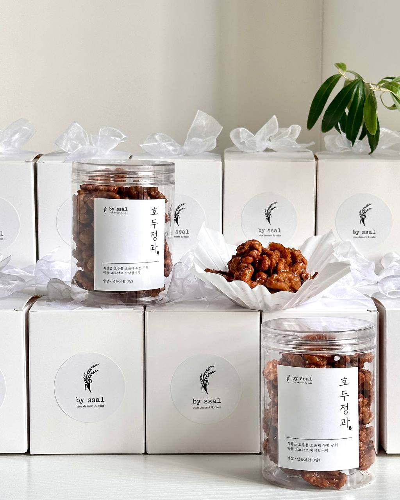

호두정과
Candied Walnut (Jeonggwa)
120g ₩12,000
최상급 호두를 오븐에 두 번 구워 더욱 고소하고 바삭합니다.
조청에 버무린 윤기 나는 호두 정과. 한 알 집어먹으면 고소한 향이 입안 가득,
달콤한 조청이 은은하게 감쌉니다. 건강한 간식의 정석.

최상급 호두를 오븐에 두 번 구워 더욱 고소하고 바삭합니다.
조청에 버무린 윤기 나는 호두 정과. 한 알 집어먹으면 고소한 향이 입안 가득,
달콤한 조청이 은은하게 감쌉니다. 건강한 간식의 정석.
투명 통에 담아 한눈에 보이는 고급 패키지. 리본 박스와 함께 드리면 명절·감사 선물로 완벽합니다.
| 구성 | 가격 |
|---|---|
| 120g (투명통) | ₩12,000 |